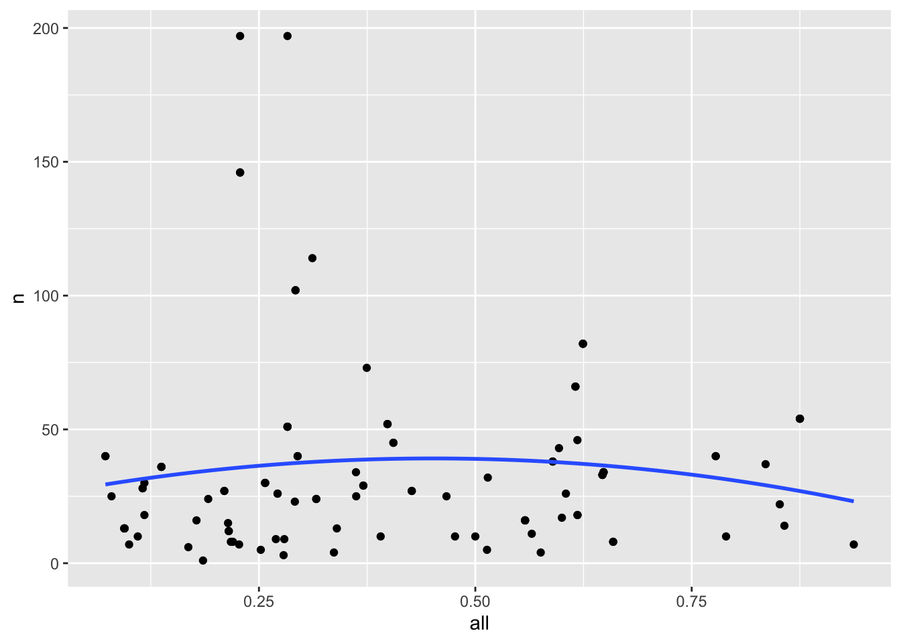

Warning: package 'lubridate' was built under R version 4.3.1
── Attaching core tidyverse packages ──────────────────────── tidyverse 2.0.0 ──
✔ dplyr 1.1.3 ✔ readr 2.1.4
✔ forcats 1.0.0 ✔ stringr 1.5.0
✔ ggplot2 3.4.2 ✔ tibble 3.2.1
✔ lubridate 1.9.3 ✔ tidyr 1.3.0
✔ purrr 1.0.2
── Conflicts ────────────────────────────────────────── tidyverse_conflicts() ──
✖ dplyr::filter() masks stats::filter()
✖ dplyr::lag() masks stats::lag()
ℹ Use the conflicted package (<http://conflicted.r-lib.org/>) to force all conflicts to become errors
library(usmap)library(sf)
Linking to GEOS 3.11.0, GDAL 3.5.3, PROJ 9.1.0; sf_use_s2() is TRUE
library(infer)library(moderndive)
##Tidying Data#creating dfs from .csv filespolice_locals <-read_csv("data/police-locals.csv")
Rows: 75 Columns: 10
── Column specification ────────────────────────────────────────────────────────
Delimiter: ","
chr (6): city_old, city, state, black, hispanic, asian
dbl (4): police_force_size, all, white, non-white
ℹ Use `spec()` to retrieve the full column specification for this data.
ℹ Specify the column types or set `show_col_types = FALSE` to quiet this message.
Rows: 3422 Columns: 6
── Column specification ────────────────────────────────────────────────────────
Delimiter: ","
chr (4): name, type, state, oricodes
dbl (2): id, total_shootings
ℹ Use `spec()` to retrieve the full column specification for this data.
ℹ Specify the column types or set `show_col_types = FALSE` to quiet this message.
Rows: 9129 Columns: 19
── Column specification ────────────────────────────────────────────────────────
Delimiter: ","
chr (12): threat_type, flee_status, armed_with, city, county, state, locati...
dbl (4): id, latitude, longitude, age
lgl (2): was_mental_illness_related, body_camera
date (1): date
ℹ Use `spec()` to retrieve the full column specification for this data.
ℹ Specify the column types or set `show_col_types = FALSE` to quiet this message.
#removing old `city` tag from data set that we created when decatenated the city namespolice_locals <- police_locals |>select(-city_old)# creating `agencies` df with just police departmentsagencies <- agencies |>filter(grepl("department", tolower(name))) |>filter(!grepl("county", tolower(name)))#creating binned categorical account of if shooting victim was `armed`shootings <- shootings |>mutate(armed =case_when(is.na(armed_with) ~"NO", armed_with =="unarmed"~"NO", armed_with =="unknown"~"NO", armed_with =="undetermined"~"NO", armed_with =="gun"~"YES", armed_with =="knife"~"YES", armed_with =="blunt_object"~"YES", armed_with =="other"~"YES", armed_with =="replica"~"YES", armed_with =="vehicle"~"YES"))#creating df with only agency `names`, `id`, and `state`agencies_ids <- agencies |>select(name, id, state)agencies_ids
# A tibble: 2,057 × 3
name id state
<chr> <dbl> <chr>
1 Aberdeen Police Department 2576 WA
2 Abilene Police Department 2114 TX
3 Abington Township Police Department 2088 PA
4 Acworth Police Department 3375 GA
5 Ada Police Department 2579 OK
6 Adel Police Department 3107 GA
7 Akron Police Department 815 OH
8 Alamogordo Police Department 1434 NM
9 Alamosa Police Department 2354 CO
10 Albany Police Department 1443 GA
# ℹ 2,047 more rows
#creating df with `city`, `agency`, and `state` info for each shootingshooting_agencies <- shootings |>select(city, agency_ids, state)shooting_agencies
# A tibble: 9,129 × 3
city agency_ids state
<chr> <chr> <chr>
1 Shelton 73 WA
2 Aloha 70 OR
3 Wichita 238 KS
4 San Francisco 196 CA
5 Evans 473 CO
6 Guthrie 101 OK
7 Chandler 195 AZ
8 Assaria 490 KS
9 Burlington 287 IA
10 Knoxville 26254 PA
# ℹ 9,119 more rows
#changing `shooting` var in `shooting_agencies` df to numericshooting_agencies$agency_ids <-as.numeric(shootings$agency_ids)
Warning: NAs introduced by coercion
#creating df with `city` and `state` info for each agency by joining `agencies_ids` and `shooting_agencies`agencies_w_cities <- agencies_ids |>left_join(shooting_agencies, by =c("id"="agency_ids", "state"="state")) |>drop_na(city) |>distinct(id, .keep_all =TRUE)agencies_w_cities
# A tibble: 1,781 × 4
name id state city
<chr> <dbl> <chr> <chr>
1 Aberdeen Police Department 2576 WA Aberdeen
2 Abilene Police Department 2114 TX Abilene
3 Abington Township Police Department 2088 PA Abington Township
4 Acworth Police Department 3375 GA Acworth
5 Ada Police Department 2579 OK Ada
6 Adel Police Department 3107 GA Adel
7 Akron Police Department 815 OH Akron
8 Alamogordo Police Department 1434 NM Alamogordo
9 Alamosa Police Department 2354 CO Alamosa
10 Albany Police Department 1443 GA Albany
# ℹ 1,771 more rows
#creating df with census data for each agency by joining `agencies_w_cities` and `police_locals`agencies_census <- agencies_w_cities |>full_join(police_locals, by =c("city"="city", "state"="state")) |>drop_na(police_force_size) |>distinct(id, .keep_all =TRUE) |>mutate(majority =if_else(all >=0.5, "TRUE", "FALSE"))agencies_census
# A tibble: 109 × 12
name id state city police_force_size all white `non-white` black
<chr> <dbl> <chr> <chr> <dbl> <dbl> <dbl> <dbl> <chr>
1 Albany P… 2237 NY Alba… 890 0.185 0.160 0.364 **
2 Albuquer… 508 NM Albu… 1340 0.616 0.630 0.602 **
3 Amtrak P… 1657 IL Chic… 12120 0.875 0.872 0.877 0.89…
4 Atlanta … 447 GA Atla… 2950 0.137 0.186 0.111 0.10…
5 Austin P… 141 TX Aust… 1985 0.295 0.195 0.427 0.25
6 Baltimor… 4784 MD Balt… 2800 0.257 0.133 0.362 0.39…
7 Baltimor… 149 MD Balt… 2800 0.257 0.133 0.362 0.39…
8 BART Pol… 2015 CA Oakl… 1530 0.0948 0.0267 0.160 0.06…
9 Baton Ro… 1098 LA Bato… 980 0.214 0.144 0.321 0.34…
10 Boston P… 3 MA Bost… 2560 0.477 0.442 0.583 0.68…
# ℹ 99 more rows
# ℹ 3 more variables: hispanic <chr>, asian <chr>, majority <chr>
#creating df of only shootings involving agencies within `agencies` dfshootings_case <- shootings |>right_join(agencies_census, by =c("city"="city", "state"="state")) |>select(-agency_ids) |>rename(agency_ids = id.y, id = id.x, agency = name.y, victim = name.x) |>select(-location_precision, -race_source)
Warning in right_join(shootings, agencies_census, by = c(city = "city", : Detected an unexpected many-to-many relationship between `x` and `y`.
ℹ Row 4 of `x` matches multiple rows in `y`.
ℹ Row 29 of `y` matches multiple rows in `x`.
ℹ If a many-to-many relationship is expected, set `relationship =
"many-to-many"` to silence this warning.
shootings_case
# A tibble: 3,677 × 27
id date threat_type flee_status armed_with city county state
<dbl> <date> <chr> <chr> <chr> <chr> <chr> <chr>
1 5 2015-01-03 move not unarmed Wichita Sedgw… KS
2 8 2015-01-04 point not replica San Francis… San F… CA
3 8 2015-01-04 point not replica San Francis… San F… CA
4 22 2015-01-07 threat not knife Columbus Frank… OH
5 22 2015-01-07 threat not knife Columbus Frank… OH
6 27 2015-01-07 shoot foot gun New Orleans Orlea… LA
7 325 2015-01-09 point not gun El Paso El Pa… TX
8 46 2015-01-13 shoot foot gun Albuquerque Berna… NM
9 46 2015-01-13 shoot foot gun Albuquerque Berna… NM
10 56 2015-01-15 shoot foot gun Indianapolis Marion IN
# ℹ 3,667 more rows
# ℹ 19 more variables: latitude <dbl>, longitude <dbl>, victim <chr>,
# age <dbl>, gender <chr>, race <chr>, was_mental_illness_related <lgl>,
# body_camera <lgl>, armed <chr>, agency <chr>, agency_ids <dbl>,
# police_force_size <dbl>, all <dbl>, white <dbl>, `non-white` <dbl>,
# black <chr>, hispanic <chr>, asian <chr>, majority <chr>
# A tibble: 108 × 2
agency n
<chr> <int>
1 Albany Police Department 1
2 Albuquerque Police Department 66
3 Amtrak Police Department 54
4 Atlanta Police Department 36
5 Austin Police Department 40
6 BART Police Department 13
7 Baltimore City Police Department 30
8 Baltimore Police Department 30
9 Baton Rouge Police Department 15
10 Boston Police Department 10
# ℹ 98 more rows
#mapping Locations of Police-Involved Shootings between 2015 and 2023library(ggmap)
Warning: package 'ggmap' was built under R version 4.3.1
ℹ Google's Terms of Service: <https://mapsplatform.google.com>
Stadia Maps' Terms of Service: <https://stadiamaps.com/terms-of-service/>
OpenStreetMap's Tile Usage Policy: <https://operations.osmfoundation.org/policies/tiles/>
ℹ Please cite ggmap if you use it! Use `citation("ggmap")` for details.
library(maps)
Warning: package 'maps' was built under R version 4.3.1
Attaching package: 'maps'
The following object is masked from 'package:purrr':
map
library(mapdata)usa <-map_data("usa")states <-map_data("state")ggplot(data = states) +geom_polygon(aes(x = long, y = lat, fill = group, group = group), color ="white") +coord_fixed(1.3) +guides(fill=FALSE) +# do this to leave off the color legendgeom_point(data = shootings_case, aes(x = longitude, y = latitude), color ="black", size = .2) +geom_point(data = shootings_case, aes(x = longitude, y = latitude), color ="red", size = .1) +labs(title ="Locations of Police-Involved Shootings between 2015 and 2023",captions ="This is only includes cities where we have agency census data.",x ="Longitude",y ="Latitude")
Warning: The `<scale>` argument of `guides()` cannot be `FALSE`. Use "none" instead as
of ggplot2 3.3.4.
agencies_census <- agencies_census |>left_join(shootings_by_agency, by =c("name"="agency"))agencies_census
# A tibble: 109 × 13
name id state city police_force_size all white `non-white` black
<chr> <dbl> <chr> <chr> <dbl> <dbl> <dbl> <dbl> <chr>
1 Albany P… 2237 NY Alba… 890 0.185 0.160 0.364 **
2 Albuquer… 508 NM Albu… 1340 0.616 0.630 0.602 **
3 Amtrak P… 1657 IL Chic… 12120 0.875 0.872 0.877 0.89…
4 Atlanta … 447 GA Atla… 2950 0.137 0.186 0.111 0.10…
5 Austin P… 141 TX Aust… 1985 0.295 0.195 0.427 0.25
6 Baltimor… 4784 MD Balt… 2800 0.257 0.133 0.362 0.39…
7 Baltimor… 149 MD Balt… 2800 0.257 0.133 0.362 0.39…
8 BART Pol… 2015 CA Oakl… 1530 0.0948 0.0267 0.160 0.06…
9 Baton Ro… 1098 LA Bato… 980 0.214 0.144 0.321 0.34…
10 Boston P… 3 MA Bost… 2560 0.477 0.442 0.583 0.68…
# ℹ 99 more rows
# ℹ 4 more variables: hispanic <chr>, asian <chr>, majority <chr>, n <int>
agencies_census |>ggplot(mapping =aes(x = all, y = n, fill=)) +geom_point() +geom_smooth(method ="lm", formula = y ~poly(x, 2), se =FALSE)

shootings_case |>ggplot(aes(x = majority, fill = armed)) +geom_bar() +labs(title ="Shootings in Cities where a Majority of Officers Reside",captions ="This is only includes shootings where we have agency census data.",x ="Does a majority a of the total police force live in the city?",y ="Number of fatal shootings",fill ="Victim Armed?")
Warning in right_join(., agencies_census, by = c(agency = "name")): Detected an unexpected many-to-many relationship between `x` and `y`.
ℹ Row 63 of `x` matches multiple rows in `y`.
ℹ Row 2 of `y` matches multiple rows in `x`.
ℹ If a many-to-many relationship is expected, set `relationship =
"many-to-many"` to silence this warning.
shootings_by_agency_census
# A tibble: 202 × 15
# Groups: agency [108]
agency armed n.x id state city police_force_size all white
<chr> <chr> <int> <dbl> <chr> <chr> <dbl> <dbl> <dbl>
1 Albany Police … YES 1 2237 NY Alba… 890 0.185 0.160
2 Albuquerque Po… NO 10 508 NM Albu… 1340 0.616 0.630
3 Albuquerque Po… YES 54 508 NM Albu… 1340 0.616 0.630
4 Amtrak Police … NO 8 1657 IL Chic… 12120 0.875 0.872
5 Amtrak Police … YES 46 1657 IL Chic… 12120 0.875 0.872
6 Atlanta Police… NO 5 447 GA Atla… 2950 0.137 0.186
7 Atlanta Police… YES 31 447 GA Atla… 2950 0.137 0.186
8 Austin Police … NO 3 141 TX Aust… 1985 0.295 0.195
9 Austin Police … YES 37 141 TX Aust… 1985 0.295 0.195
10 BART Police De… YES 12 2015 CA Oakl… 1530 0.0948 0.0267
# ℹ 192 more rows
# ℹ 6 more variables: `non-white` <dbl>, black <chr>, hispanic <chr>,
# asian <chr>, majority <chr>, n.y <int>
ggplot(data = shootings_by_agency_census, aes(x = all, y = n.x)) +geom_jitter(jitter =15, alpha =0.5) +geom_smooth(method ="lm", formula = y ~poly(x, 2), se =FALSE) +labs(title ="Number of Shootings on a Scale of Police Force Residency",x ="Percentage of the total police force that lives in the city",y ="Number of fatal shootings in that city")
ggplot(data = shootings_by_agency_census, aes(x = all, y = n.x, color = armed)) +geom_jitter(jitter =15, alpha =0.5) +geom_smooth(method ="lm", formula = y ~poly(x, 2), se =FALSE) +labs(title ="Number of Shootings on a Scale of Police Force Residency",x ="Percentage of the total police force that lives in the city",y ="Number of fatal shootings in that city")